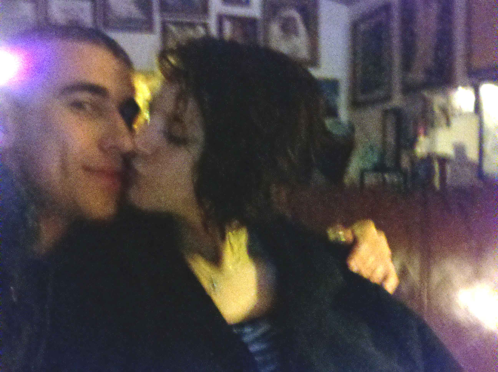
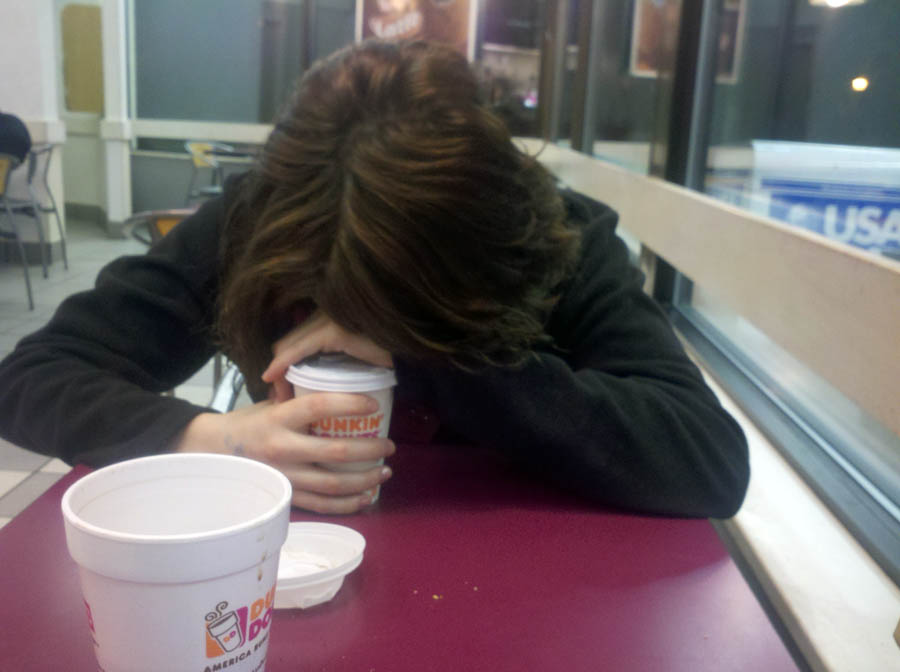
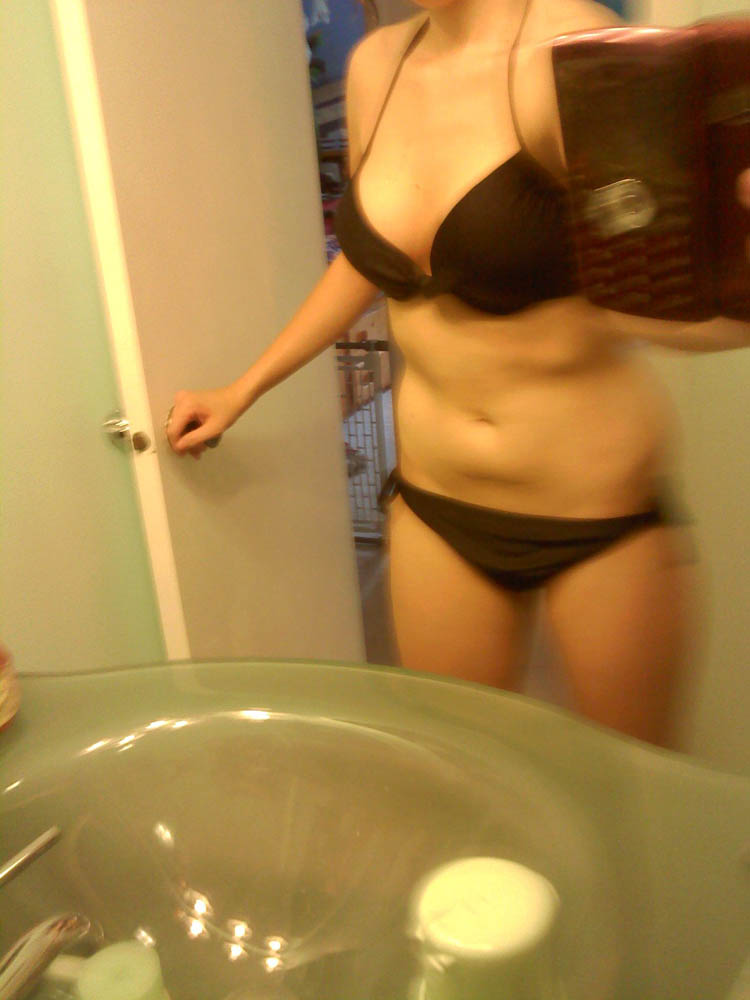
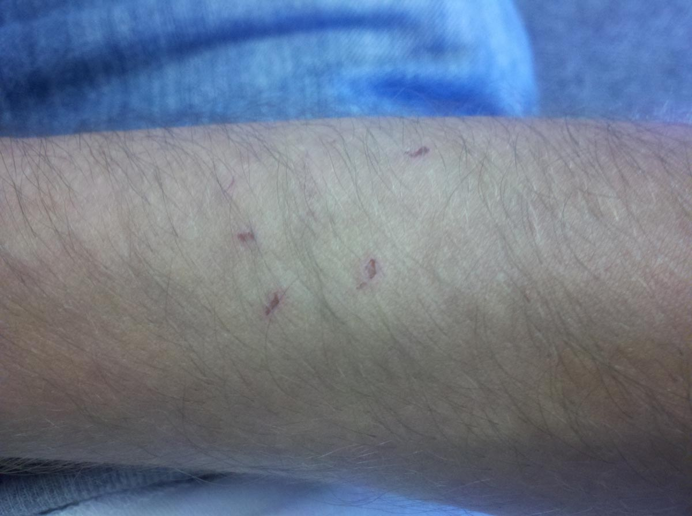

This page is devoted to the secret relationship between Rachael Louise Slack (Patton) and Nathaniel Mina.
To sum up the relationship between Rachael and Nate (myself), I'll start at the beginning. I met her on her 20th birthday, Dec 31, 2010, at a nightclub in the city of Rochester, where a friend of mine and hers told me I should dance with her as she was interested in me. So I approached her and we started dancing and having a good time — and I took a picture.
Later I asked if she wanted the picture and she said she did and gave me her number. We then left the club and I drove her to her friend's house, who was having an after party. When we got there she passed out, as she was very drunk. The next morning, Jan 1, we wanted to meet up, but I had a flight out to Florida the next morning for work in the Bahamas on cruise ships, so we did not have the chance to meet that day. While I was gone for 6 weeks we texted each other every day, and I would call her, and we learned a lot about each other. Later I asked her out for Valentine's Day and she said she couldn't wait, so I began planning for it and counting the days before I would return home.
Turns out I returned home the night of Feb 13 and then slept, excited to see Rachael after I had been talking to her for 6 weeks prior. The morning of Valentine's Day I stopped and got flowers and prepared for it all. When I got home I called her and she said that she was kinda talking to some other guy (John Patton) but that it didn't matter and she still wanted to see me. I was kinda disappointed, but she said she was just talking to him and not in a relationship, so I was okay with it. I picked her up from her house and met her friend Maria for the first time. We went on a nice date and came back to my place, where we experimented with zip ties and kinda got stuck together and fell over on my bed — which is where our first kiss took place. The next day I picked her up and we had a blast, then came back to my place and had sex for the first time as well. The day after that was Wednesday, Feb 16, where we spent the afternoon together, then she introduced me to her older friends Julie and Louis and we cuddled on their couch and watched SVU, which Rachael loves.


We then left and went to a Dunkin Donuts, as shown above. The next day was the 17th of Feb and I was forced to leave again for 6 weeks to the Bahamas.
During the time in the Bahamas I would call Rachael almost every night and we would have long talks and conversations. Then I find out she got engaged — I was totally hurt by this and talked with her about it, and she said she needed to talk with me about it, so we did. She said she may have made the wrong decision about getting engaged and she was very unsure about things. I talked with her a lot about it and she said she really likes me and we both just couldn't wait for me to get back to NY to see each other. After 6 weeks of talking with her more, I grew even more attached to Rachael and thought she was amazing and perfect for me, and she told me I am perfect as well for her. I still felt weird about her being engaged, but she told me she would figure it out and break off the engagement. My sister and I then flew into Florida, finished up our work, and drove to NY from Florida. Once back, we met up with Rachael at Eastview Mall, and then had dinner with her and my dad. Later that week we went Scuba Diving (Click here for Album).
After staying for around 10 days I had to go back to work out in Spain and France, and every night I would walk to where the ship phones were and I would call Rachael for like over an hour even though it was very expensive (like 30 bucks for an hour). When I got back we were all over each other again and I had a blast, then we went to my friends out in Niagara Falls the 5th of May and we went to a strip club and I bought my friends a lap dance. Rachael and I began to drink and then we went back to the hotel and got in the hot tub, then everyone came back and while we were going at it naked on one of the beds — but everyone was so drunk it really didn't matter. One of my friends came up to me and was like "holy shit, it's a live porno in the hotel." Let's just say I won't be forgetting that any time soon.
Rachael's Trip for John's Army Graduation
Rachael told me that she would be leaving to go see John graduate, and I told her that he would most likely convince her to get married, since he had already gotten her engaged and he would be leaving for Germany the next week, it just made sense that he would try to force her to do so. I told her this and she looked at me crazy and said "Nate, do you think I would just get married like that? I love you — if I ever were to get married to anyone I would make sure my whole family is there." So I asked her "so you promise you won't and it won't change things with us?" and she promised me she wouldn't.
She told me to go have fun and meet girls and party while she was gone, which I thought was weird and had no interest in meeting new girls. That next week was hard because in the beginning I would get a lot of phone calls from her and we would talk about everything, but then John began to suspect that there was more going on between her and I than just friendship. As that happened he took more of her time and I was able to talk to her less, which made me think something was wrong. Once, while I was talking to her on the phone, he came over and said through the phone "Go die Nate!" and hung up. Later I received a phone call from John himself apologizing for saying that. I thought that to be really strange and then realized that Rachael must have forced him to call me and say sorry. While she was gone I hung out with my friend Lonna more, who I like to talk to about relationships and stuff, as she shares the same views about dating and things. So we went out and partied a bit with my friend Mary, who took much interest in me. Once she returned, I saw one of her luggage tags with her last name as Patton — which is his last name. I asked her about it and she said he just wrote that on there and not to worry. The night she returned I asked her if she wanted to go to the club with my friend Mary and Lonna and some other friends, and she said she could, but then later said she was too tired to go :(. While I was in line to get into the club in Rochester, Rachael called me and she was very upset, saying that it feels like I've replaced her with Mary and that she didn't mean anything to me — which was completely the opposite, as the whole time I was there I was thinking about her and wishing she was with me.
I came over to her house the next morning and she was acting very strange, and I guess that there was something she was not telling me, so I asked her the question again: "DID YOU GET MARRIED?" And she replied to me "what do you mean by that?" and I said "what don't I mean by that, it's a simple question!" and she said "Legally I got married" and began crying a lot, and I began crying as well, because she had promised she wouldn't and I knew by the look on her face that it was a mistake. A part of me wanted to run outta the house right then because I was so mad at me, but another part was just hurt and wanted to know why she would do this after her and I had spent so much time together and had been talking every day for almost 6 months. I stayed at her house, then we drove to Mount Hope Cemetery where we walked around and both were really upset and sad. She told me she might be forced to stay with him because of the fact that her family hates divorce, as they are Catholic. I was hurt and did not know what to think, but she comforted me and kissed me and said not to cry. We continued to see each other and she continued to lie to John about seeing me.
The Fight Between Rachael and I
We continued to see each other. Then around the 27–29th of May we had been house-sitting again for her friend Judy, where she watches the animals and cleans. I had heard the night before that John had told her "you better not have Nate over at the house," and she assured him, while she was right next to me, that I wasn't over, even though I had been spending my nights with her there in bed. Saturday night of the 28th of May we went to a party in the back yard of Maria's house, where I hung out with Rachael and Maria and Elise and her boyfriend James. It was rather uneventful and we made s'mores, then the girls went out for slurpees and left me and James by the fire, where I talked with James about the situation with Rachael getting married and lying to me, and I told him I wasn't sure if she had just been leading me on this whole time or not. He just shook his head and said it was all really messed up. They got back and she had gotten me a slurpee too. She then sent me a picture of herself in a bikini.

We then left Maria's house and it began raining really bad to the point where we could not see in front of us. We went back to Judy's and slept there together. When we woke up that Sunday morning I received a picture message through my phone, which happened to be of her husband John half naked — it went to my email too, which I get through my smartphone. I figured he must be mad at me and sending a picture to make fun of me? I didn't know, but I was fairly upset about the whole thing, so I sent him one of me shirtless. I realized shortly after that he did not mean to send me a pic — he had just replied to all from the pic she sent both of us, so it sent it to me as well. Shortly after he calls her and asks if I am there; she tells him no, but then I interject and he hears me there.
He gets really upset and then I receive a lengthy email from him that completely sounded like she had been lying to him, as she told him that I was begging her for a bikini photo, when in truth she had just sent me one. You can read it yourself, but basically he told me to stay away from his new property — meaning his wife — and to "stop stalking her," which was a complete lie, because that is the furthest thing from the truth. She gets really upset and wants to take me home, but my motorcycle was left in her garage and would not start, so we had to go back to her house. While on the way he called her and wanted to talk to me; I began talking to him and asked him what he wanted to know, as I was sick of the lies. He said everything, so I said I'd start from the beginning. She then ripped the phone out of my hands and said to get out of her car. I told her she was unreasonable and to take me to her house to get my bike, and we were yelling at each other. We got to her house and then I had emailed him telling him just a little about Rachael and I. She grabbed my phone again and ripped the battery out of it and grabbed the memory chip out of it and threw it on the ground, because she said there was evidence on there that I could send to John that would make him divorce her. I told her that everything that was on the chip was also on my computer, and to find the chip or else I will tell him everything, so she took it out of her pocket where she was hiding it from me. We walked the street by her house and she was talking to John, lying to try to get out of what she has been hiding. My dad then came and we got my bike started and I left.
Later that evening I Skype call John to come clean about things, but right after I do, I get surprised by Rachael coming to my house really angry. She shuts off Skype in a hurry and says she is going to destroy my computer and all the evidence. She digs into my arm and wrestles me down to the floor.

Rachael then threatens me and says I better not contact or send John anything more or else she won't talk to me. Then she realized I still might contact him, and she threatened to call the cops on me to lie and say that I raped her (which is the lowest thing a girl can ever do). She grabs a cup of water and tries to pour it on my computer, but then I try stopping her and she just wipes it all over me instead. I agree to not contact him again, and she then leaves my house, and we both are still really upset and don't talk for the next few days. I begin to think that maybe she is a normal cheater, and then one night when I was drunk I remember she had told me her Facebook passwords. I know I shouldn't have checked anything, but I did anyway, because I was so fed up. While I was on her account I found pictures of several guys, and a list of 15 guys she had slept with, one of which she just labeled "That RIT guy" because she did not even know his name. More disturbing than that was the fact that her old boss's name (Brad Johnson) was also on the list. I had known that something had gone on with them, because of how she would check his Facebook page and the way she talked about him.
This all made me just sick and upset that she could be lying to me and John and herself, really, so I tried to keep myself busy, but I still missed Rachael so much — missed her with me in my bed, doing everything together — and it really hurt, and I began to drink a lot to get over it. My friend Lonna was also over and we had parties where I would drink more. I began seeing a girl who used to be Rachael's friend, the same one who told me Rachael was interested in me the first day we met. We hung out for three or four days and she was nice, but it didn't change the fact that I was still completely in love with Rachael. One night when I was at my house, Rachael called me and demanded to know who was at my house and if it was anyone she knew, and I didn't even tell her, and I was still so pissed at her. About 20 minutes later she showed up at my house and I went outside to talk to her, and she grabbed me and hugged me and told me she missed me so very much, as I missed her as well. She said "how could you do this to me? how could you see another girl?" and I told her it was because she had been lying to everyone and that she hurt me so much. She then begged me to kick her out of my house and that she would spend the night with me like old times. I really wanted to, but I decided to be strong and tell her no.
We both cried and it was so hard on both of us. Rachael then came over the day after and kissed me, and we got over the big fight that we had. We began sleeping with each other again and doing everything with each other. That is where my Journal began — it is only partial, but has specific events and lies she kept telling John to make it look like she was not seeing me anymore. She even lied to her friends Maria and her family about our relationship, but every day we continued to see each other. We have been seeing each other almost every day since then. She tells me she has to choose between us and I beg that she does, because I'm sick of the lies, which is why I'm also writing this, as a way for me to vent and figure out what's really going on with her. I gave her a week to decide and she still has not, and it's been almost two weeks. My friends tell me I'm crazy and I should just tell her husband everything, but I really want it to be a decision she makes. I still am doing everything I can with her, because I asked her if she wanted me to let her go and she said of course not — "I love you."
She later told me "Just keep being awesome and I know I'll pick you." I don't know what to believe anymore. Recently I bought her and myself to see Skrillex at the Water Street Music Hall for 80 bucks a ticket, where we also got tickets for Roots Collider, which she showed interest in. The next day was Wednesday and she was very busy, so we did not chill, and then she called and said that Thursday, July 7th, she would be spending the night at my house.